問題圖表
的職缺學歷要求
簡述
將近 75% 的職缺只要求學士學位，甚至沒有學歷上的要求
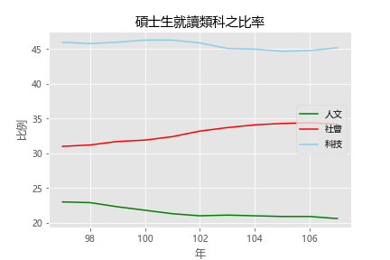
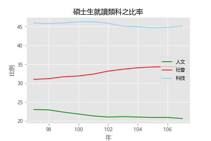
資料來源 : 教育部統計處
而可由上圖看出，臺灣大多數選擇就讀研究所的學生為科技相關科系。
的工作經驗要求
簡述
將近一半的職缺，不要求工作經驗，對新鮮人較友善，只有少部份工作需要資深人員。
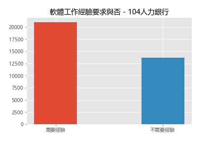
讓許多學生擔心若是工作經驗不足會無法進入大公司。
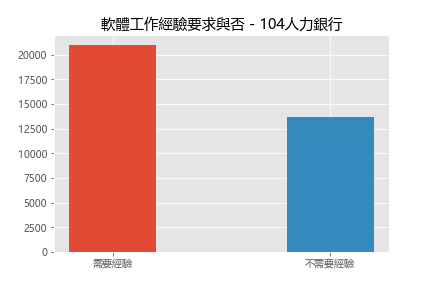
資料來源 : 104人力銀行職缺，關鍵字「軟體」
而在眾多臺灣企業當中，需要經驗的職缺，遠大於不需要經驗的。讓許多學生擔心若是工作經驗不足會無法進入大公司。
的工作經驗要求
簡述
三間公司偏好能夠活用Python, C++, Java 等語言的軟體工程師。
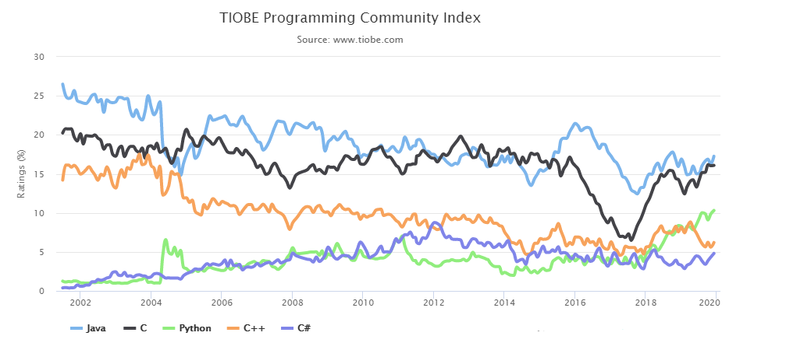
而其中 Python 的熱門度，從 2018 開始有明顯上升。
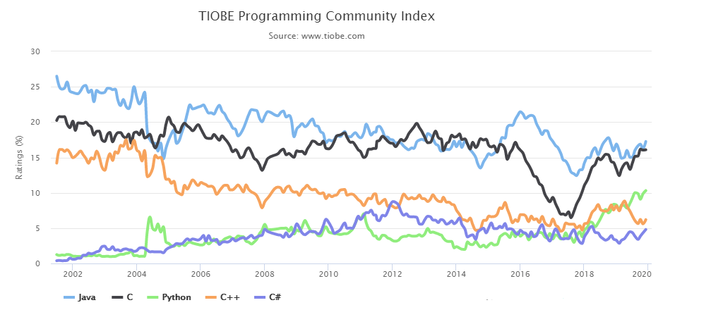
資料來源 : TIOBE 程式語言熱門度排名
可由上圖看出，Python, C++, Java 這三個程式語言的熱門度，皆在前五名中。而其中 Python 的熱門度，從 2018 開始有明顯上升。
的關聯圖
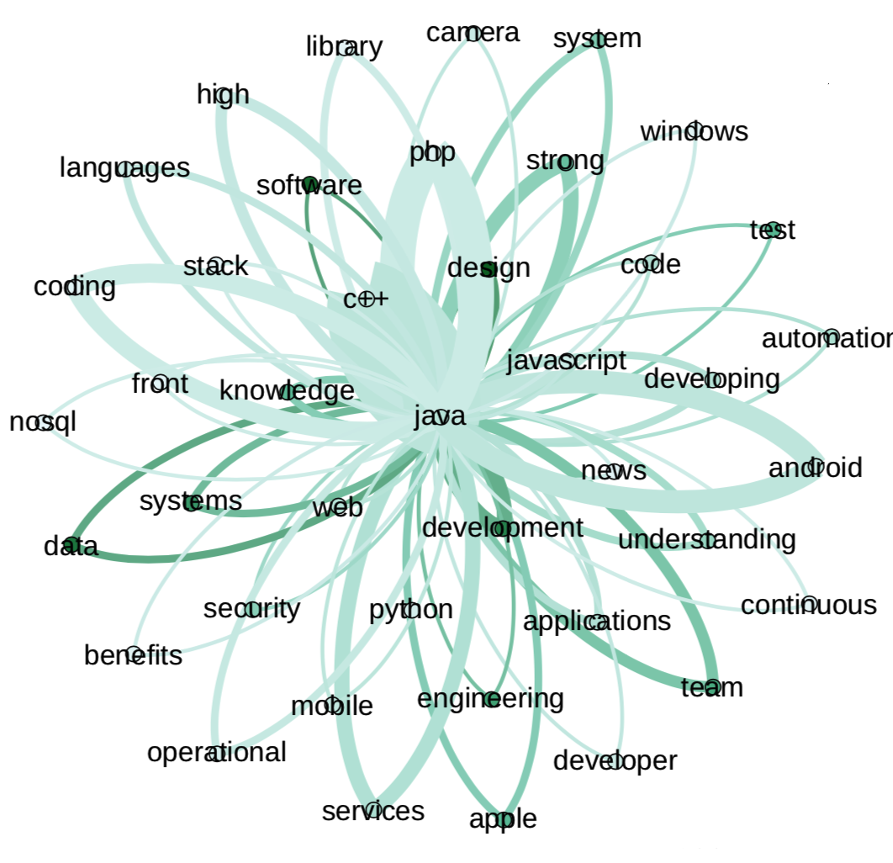
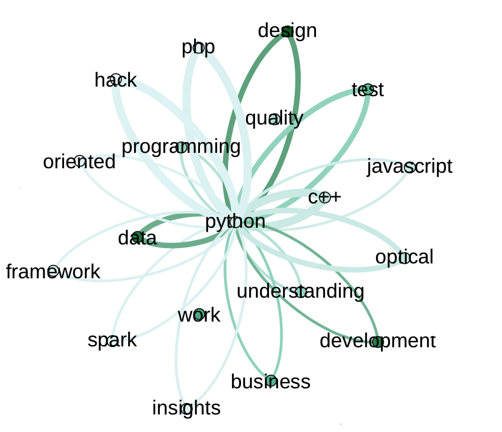
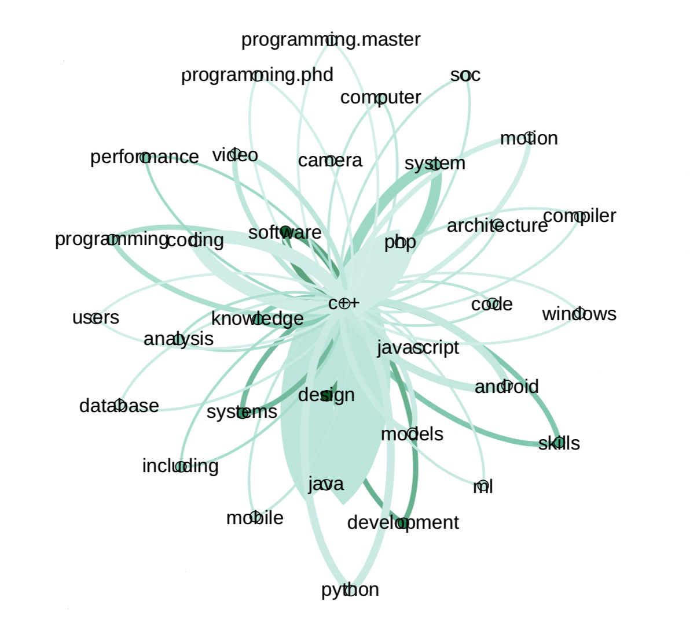
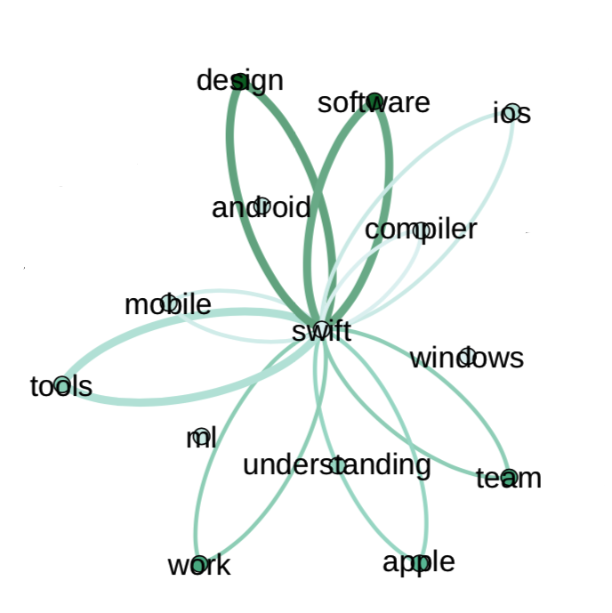
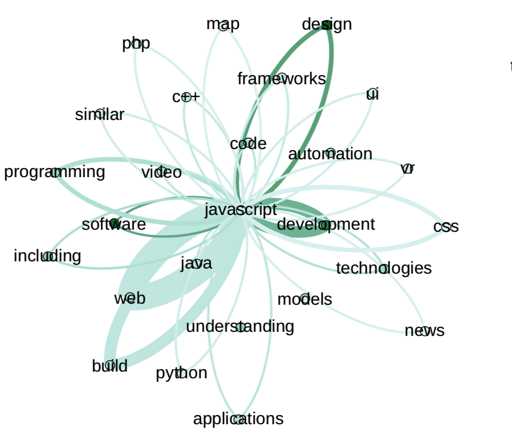
簡述
可由上圖看出，與 python 具關連性的詞彙：
- data：自動化工作、資料處理
- business：商業智慧（BI）
- optical：光學感應器、光學模擬
- test：軟體自動化測試
- park：一個開源的叢集運算框架
可由上圖看出，與 C++ 具關連性的詞彙：
- system：在作業系統上執行
- windows：視窗應用程式
- soc：系統單晶片
- database：資料庫
可由上圖看出，與 Java 具關連性的詞彙：
- nosql：非關聯性資料庫
- front：前端(客戶端)
- soc：系統單晶片
- security：安全性
- strong：強參考性
可由上圖看出，與 JavaScript 具關連性的詞彙：
- css, web, ui：網頁相關
- frameworks：框架應用
- php：後端語言
- automation：自動化測試
可由上圖看出，與 Swift 具關連性的詞彙：
- Mobile：手機應用程式
- apple：蘋果開發的語言
- design：設計模式言
- tools：套件管理
- soc：系統單晶片
- ml：生成機器學習模型的框架
的工作需求文字雲
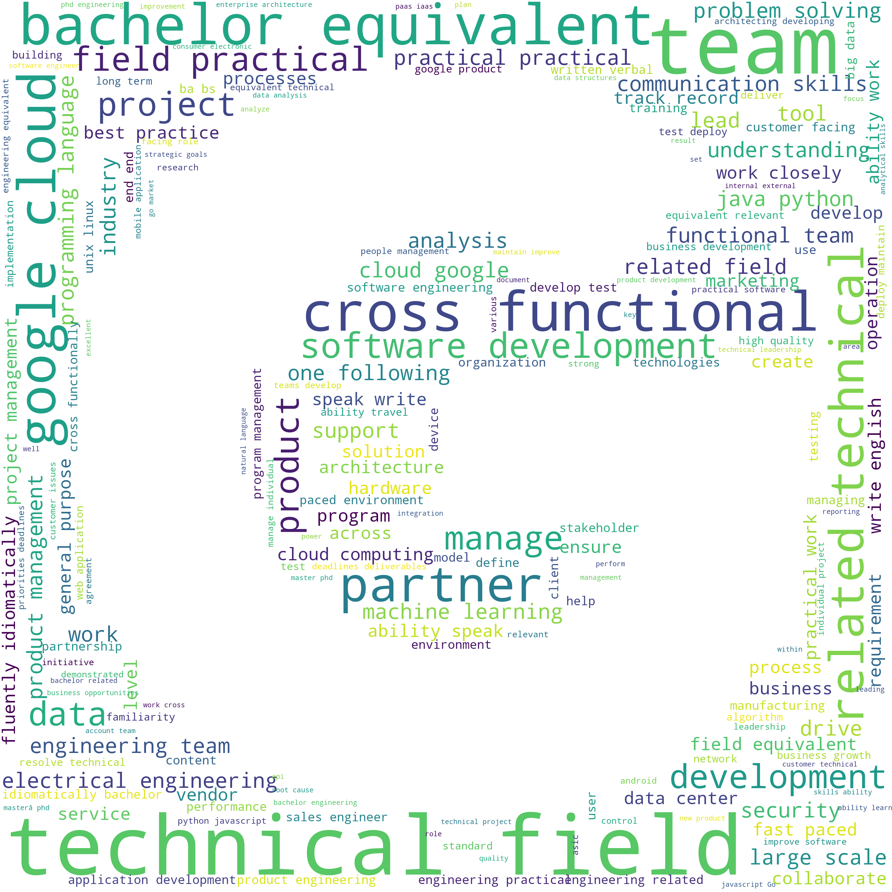

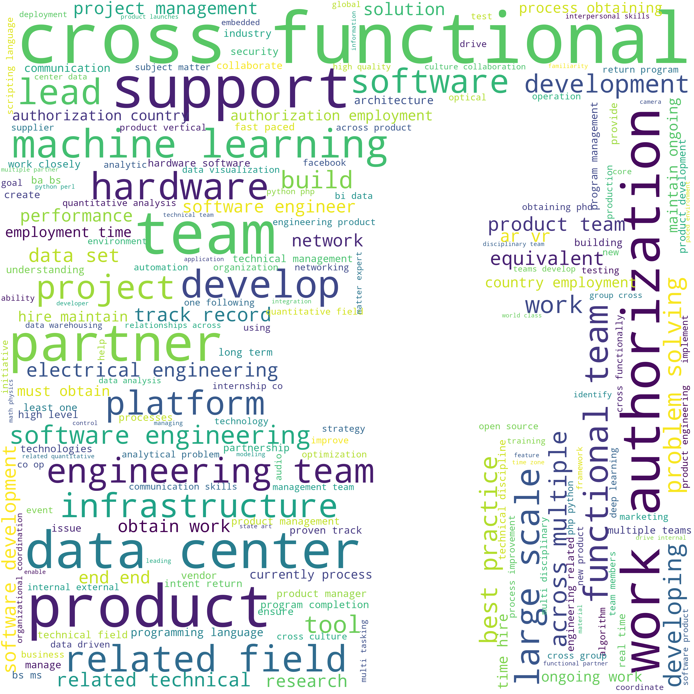
簡述
可由上圖看出，三間公司對於其他方面的要求：
- 溝通技巧（口頭、寫作
- 人際交往能力
- 主動自發的工作態度
- 批判性的思維